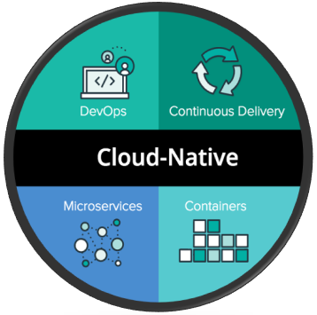

Clould Native Development
let's get to know what cloud native is !!
Cloud-native architecture and technologies are an approach to designing, constructing, and operating workloads that are built in the cloud and take full advantage of the cloud computing model.
What is cloud-native application architecture?
Cloud native architecture is a design methodology that utilizes cloud services such as EC2, S3, Lambda from AWS, etc to allow dynamic and agile application development techniques that take a modular approach to building, running, and updating software through a suite of cloud-based microservices versus a monolithic application infrastructure.
Benefits of cloud native architecture
- Using loosely-coupled services instead of an enterprise tech stack offers development teams the option to choose the framework, language, or system that best meets the specific objectives of an organization or project
- The portability of containerized microservices ensures that an organization isn't overly reliant on any one cloud provider.
- The complexity of troubleshooting is reduced since an open source container orchestration platform like Kubernetes makes it easier to identify the container with a bug without dismantling the entire application.
- Since microservices operate independently, developers can optimize each based on core functionality and ultimately enrich the end user experience.
- The use of microservices in software development facilitates continuous integration and continuous delivery efforts, reducing the development lifecycle and the opportunity for human error with automated processes.
